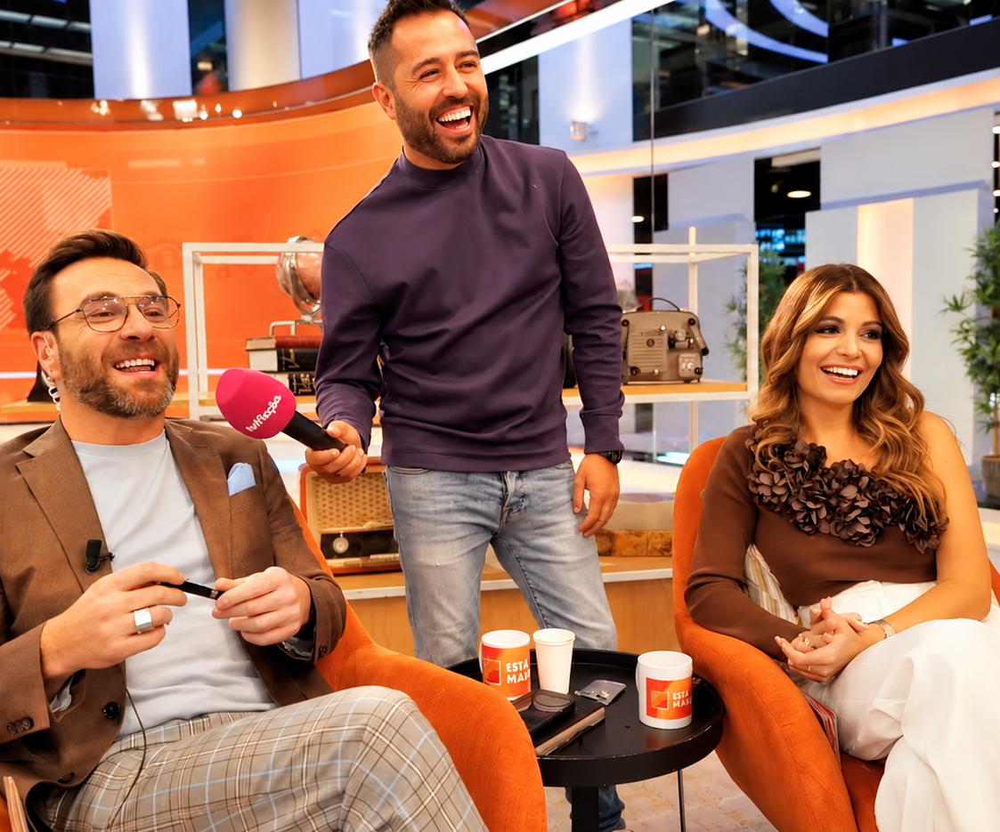
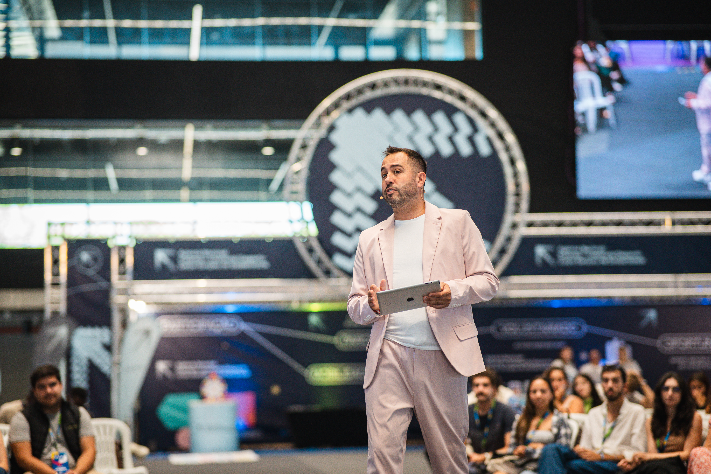
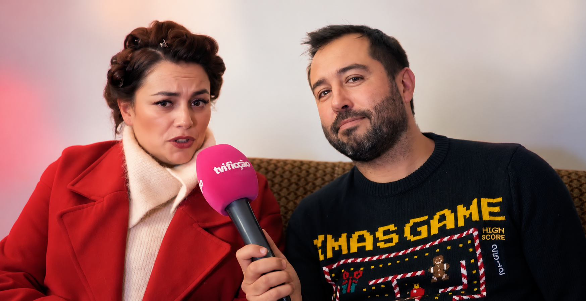
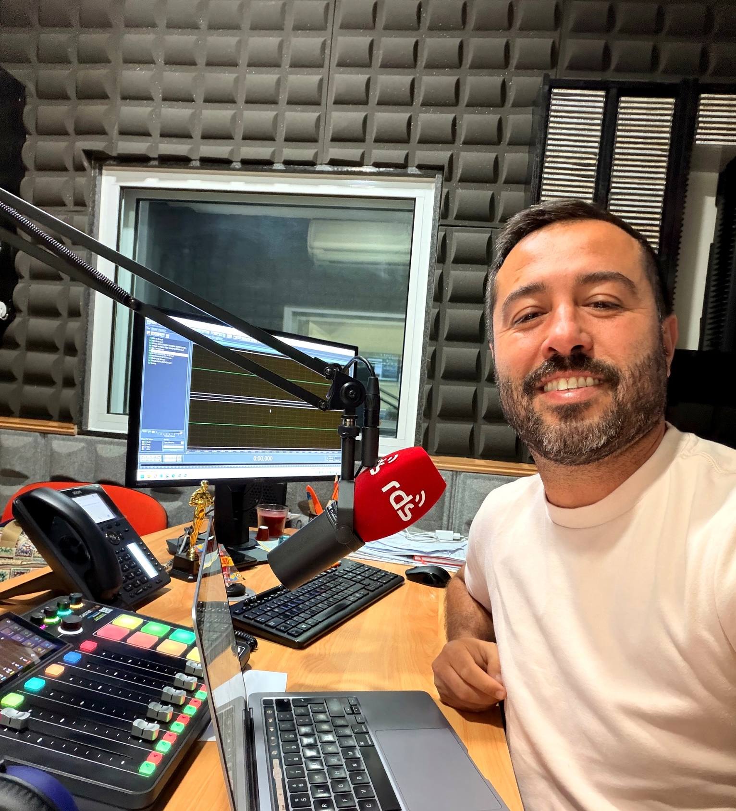

TV & REPORTAGEM
Apresentação, reportagem e conteúdos para televisão.
→

Sou comunicador, apresentador e profissional com experiência em televisão, rádio, eventos e comunicação digital.
Gosto de estar onde há pessoas, histórias e algo para comunicar.
Saber mais →

Apresentação, reportagem e conteúdos para televisão.

Emissão em direto, animação de rádio, podcasts e Voice over para anúncios e cursos.

Conteúdos digitais, entrevistas, diretos e lives, com rua, leveza e interação com comunidades.

Apresentação de galas, conferências, cerimónias e eventos corporativos.

Formação em comunicação, expressão, media e redes sociais, com uma abordagem prática, dinâmica e orientada para pessoas e contextos reais.

Ficção · Bastidores

Regresso a Casa · Animador de programa de tarde

Quanto Pagas de Renda?

Gala de Desporto · Apresentação · Entrevistas · Conteúdo

Lig(a)-te ao Centenário
Seja para apresentar um evento, criar conteúdos, dar voz a uma campanha ou desenvolver um projeto de comunicação, vamos conversar.
Enviar mensagem →ask@sandrobernardo.com